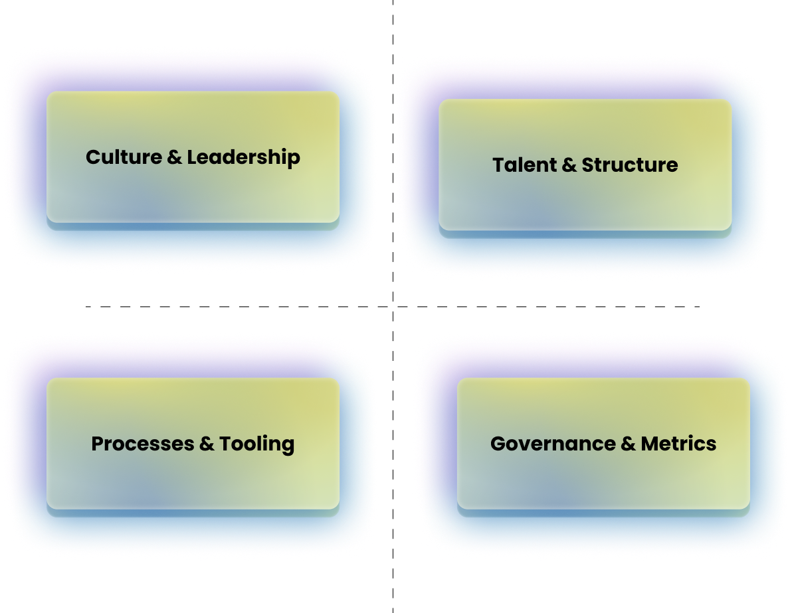
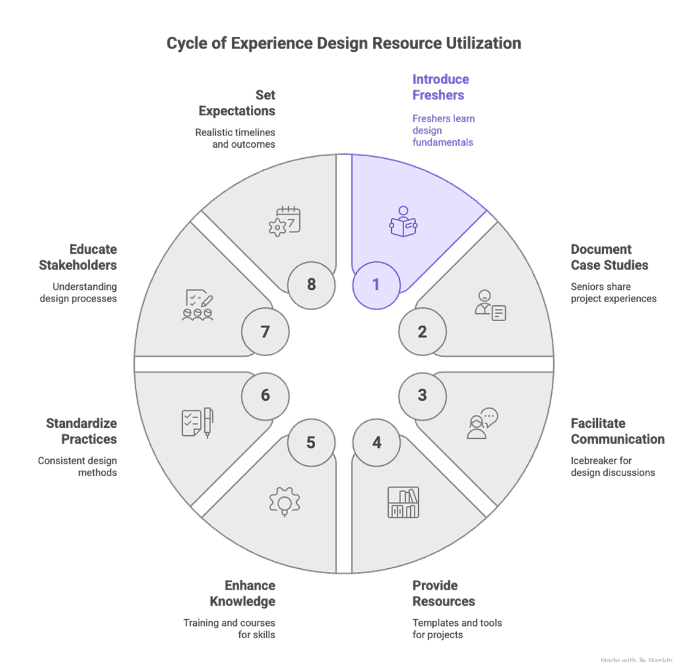
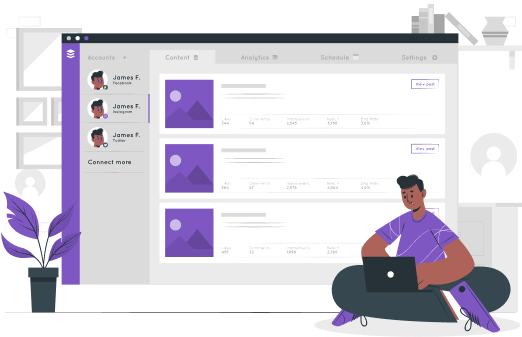
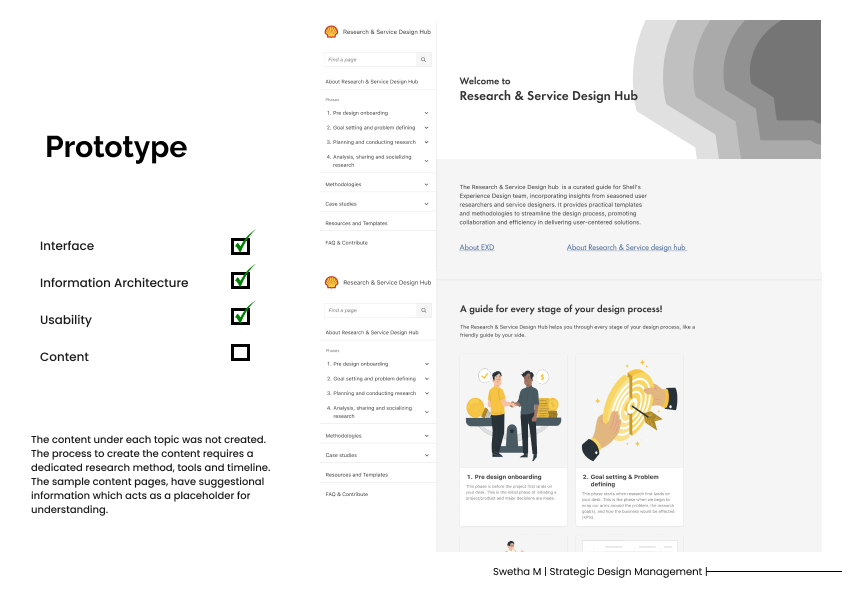
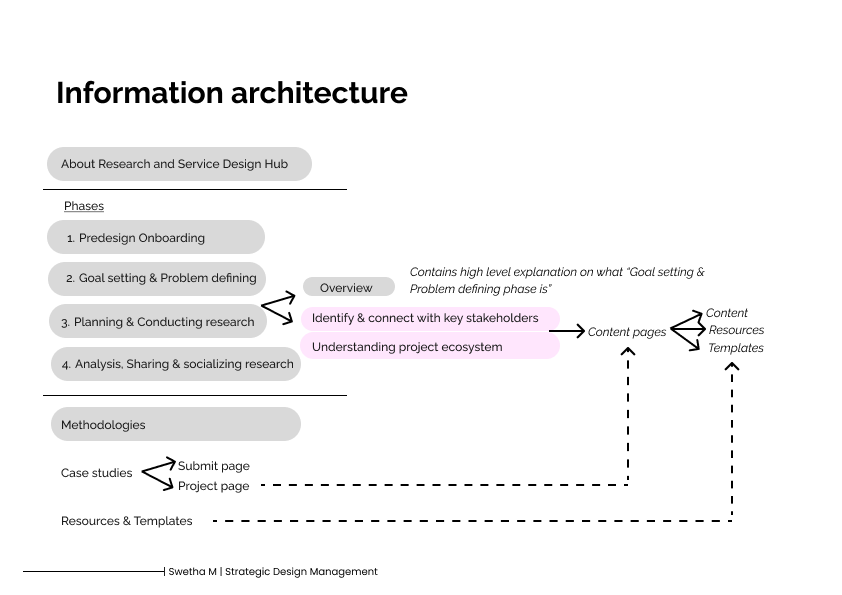

Background & Vision
The initiative originated from an internal Design Maturity Survey conducted by Shell's Experience Design (EXD) team. The findings highlighted a clear opportunity to strengthen the practice of User Experience Research (UXR) and Service Design (SD) across the organisation.
Our vision was to enhance the effectiveness, consistency, and strategic influence of UXR and Service Design by addressing systemic gaps revealed through the maturity assessment.
Discovery Phase
To frame the problem space, I began by exploring:
- What constitutes design maturity?
- How do leading organisations institutionalise UXR and Service Design?
- What governance models, operating frameworks, and enablement structures support scalable design practices?
In parallel, we defined our research objectives and conducted in-depth interviews with seasoned Service Designers and User Researchers across projects and business units.
Research Objectives
Our primary research aimed to understand:
- Practitioner background, project context, and team structures
- Typical approaches, methodologies, and frameworks employed
- Key learnings and best practices
- Recurring challenges and organisational barriers
- Tools, systems, and documentation practices

Key Insights
The research surfaced several nuanced, often unarticulated challenges embedded within the organisational ecosystem. These were not isolated issues, but interrelated systemic friction points. Through synthesis and thematic clustering, the following core challenges emerged:
- Limited understanding of design value at senior leadership levels
- Socio-political filters leading to insight pushback and unheard researcher voices
- Business functions owning early-stage problem framing without research alignment
- Project silos and lack of cross-functional visibility
- Inconsistent systematisation, documentation, and handoffs
- Perception of EXD as "The Auditor" and instances of "UX Theatre"
- Difficulty in measuring and communicating impact
Systems Mapping & Root Cause Identification
By mapping interdependencies between these challenges, two foundational root causes were identified:
- Lack of shared understanding of design value
- Lack of systematisation and institutional memory
These core issues were creating downstream effects across governance, collaboration, credibility, and impact measurement. We hypothesised that addressing these two levers would generate a positive ripple effect across the broader ecosystem.

Strategic Intervention
After evaluating feasibility, scalability, and organisational alignment, we identified the most impactful intervention:
Creation of a Centralised, Contextualised Playbook & Knowledge Library
A dedicated platform tailored specifically to Shell's context — embedding:
- Shell-specific case studies
- Proven research and service design frameworks
- Templates and documentation standards
- Best practices and learning artefacts
- Governance guidelines
- Impact storytelling examples
This solution aimed to institutionalise best practices, improve research rigour and consistency, increase leadership literacy around design value, reduce duplication of effort, enable knowledge retention and handover, and strengthen credibility of EXD.
The Solution: Shell Research & Service Design Hub
The outcome was the Shell Research & Service Design Hub — a centralised, scalable enablement platform designed to function as:
- A playbook
- A capability-building repository
- A knowledge management system
- A design maturity accelerator

Prototyping & Validation
We developed a working prototype of the Hub and conducted usability testing with practitioners. The feedback was overwhelmingly positive regarding:
- Practical utility
- Relevance to Shell's context
- Potential to improve cross-team alignment
Constructive inputs were received around UI clarity, navigation, and information architecture, which informed further refinements.


Impact Potential
The Shell Research & SD Hub positions EXD as a strategic enabler rather than an execution layer. By strengthening systematisation and improving the articulation of design value, the Hub contributes to long-term design maturity growth and organisational alignment.